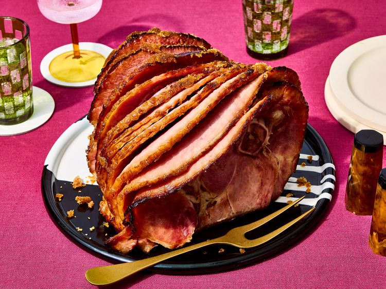

Odin Recipes
Home
Slow Cooker Ham

Description
This slow cooker ham always comes out juicy and delicious! It's easy to make with this no-fuss
recipe that's perfect for holiday meals. The only ingredients you need are brown sugar and a
bone-in picnic ham.
Ingredients
- 2 cups packed brown sugar
- 1 (8 pound) cured, bone-in picnic ham
Steps
-
Gather the ingredients.
-
Spread about 1 1/2 cups of brown sugar on the bottom of a slow cooker.
-
Place ham on the brown sugar with the flat side facing down; you might have to trim it
a little to make it fit.
-
Use your hands to rub the remaining brown sugar onto the ham.
Cover, and cook on Low for 8 hours.
-
Serve and enjoy!